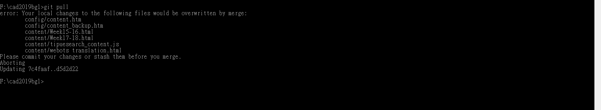

reveal 插入影片 <<
Previous Next >> About
Question
Q1:可攜式NX12無法開啟&9443需要特定cmd才能開啟
A1:電腦相容性問題，只需重新安裝NX12單機版or安裝虛擬機即可解決無法開啟的問題
Q2:編譯過的solvespace無法開啟，在升級筆電RAM之前是正常的，在升級完成後無法正常開啟
A2解決方法有兩個，第一個為重新編一次solvespace，第二個方法為重新下載solvespace。
solvesapce 下載連結(記得下載13MB的)https://ci.appveyor.com/project/whitequark/solvespace/build/artifacts
Q3分組協同有時候會遇到如圖之問題，無法使用git pull同步網誌內容

A3一樣使用add,commit,push，依照下面指令即可解決問題
git pull /git add . /git commit -m " "/ git push / git pull/ git add . /git commit -m " " / git push
即可解決問題
Microsoft Windows [Version 10.0.18362.535]
(c) 2019 Microsoft Corporation. All rights reserved.
Y:>F:
F:\201906_fall>cd cad2019
The system cannot find the path specified.
F:\201906_fall>cd ..
F:>cd cad2019bg1
F:\cad2019bg1>git pull
remote: Enumerating objects: 19, done.
remote: Counting objects: 100% (19/19), done.
remote: Compressing objects: 100% (3/3), done.
remote: Total 22 (delta 16), reused 18 (delta 16), pack-reused 3
Unpacking objects: 100% (22/22), done.
From https://github.com/s40723212/cad2019bg1
b773e51..7d55fdf master -> origin/master
error: Your local changes to the following files would be overwritten by merge:
content/week10-14.html
content/week15-16.html
content/week17-18.html
Please commit your changes or stash them before you merge.
error: The following untracked working tree files would be overwritten by merge:
content/week17協同任務.html
content/week18.html
content/劉冠志.html
content/曾信誠.html
content/洪維辰.html
content/高永霖&顏士勛.html
images/modelTut15.jpg
images/modelTut16.jpg
images/modelTut17.jpg
images/modelTut18.jpg
Please move or remove them before you merge.
Aborting
F:\cad2019bg1>git add .
F:\cad2019bg1>git commit -m "解決git pull 問題"
[master f323f5c] 解決git pull 問題
14 files changed, 1268 insertions(+), 312 deletions(-)
rewrite content/week10-14.html (69%)
create mode 100644 "content/week17\345\215\224\345\220\214\344\273\273\345\213\231.html"
create mode 100644 content/week18.html
create mode 100644 "content/\345\212\211\345\206\240\345\277\227.html"
copy content/week10-14.html => "content/\346\233\276\344\277\241\350\252\240.html" (66%)
create mode 100644 "content/\346\264\252\347\266\255\350\276\260.html"
create mode 100644 "content/\347\254\254\345\205\253\347\253\240"
create mode 100644 "content/\351\253\230\346\260\270\351\234\226&\351\241\217\345\243\253\345\213\233.html"
create mode 100644 images/modelTut15.jpg
create mode 100644 images/modelTut16.jpg
create mode 100644 images/modelTut17.jpg
create mode 100644 images/modelTut18.jpg
F:\cad2019bg1>git push
Username for 'https://github.com': s40723212
Password for 'https://s40723212@github.com':
To https://github.com/s40723212/cad2019bg1
! [rejected] master -> master (non-fast-forward)
error: failed to push some refs to 'https://github.com/s40723212/cad2019bg1'
hint: Updates were rejected because the tip of your current branch is behind
hint: its remote counterpart. Integrate the remote changes (e.g.
hint: 'git pull ...') before pushing again.
hint: See the 'Note about fast-forwards' in 'git push --help' for details.
F:\cad2019bg1>git pull
Auto-merging content/week17-18.html
CONFLICT (content): Merge conflict in content/week17-18.html
Auto-merging content/week15-16.html
CONFLICT (content): Merge conflict in content/week15-16.html
Automatic merge failed; fix conflicts and then commit the result.
F:\cad2019bg1>git add .
F:\cad2019bg1>git commit -m "解決git pull 問題"
[master 642dbee] 解決git pull 問題
F:\cad2019bg1>git push
Username for 'https://github.com': s40723212
Password for 'https://s40723212@github.com':
Enumerating objects: 19, done.
Counting objects: 100% (19/19), done.
Delta compression using up to 8 threads
Compressing objects: 100% (11/11), done.
Writing objects: 100% (11/11), 2.25 KiB | 2.25 MiB/s, done.
Total 11 (delta 8), reused 0 (delta 0)
remote: Resolving deltas: 100% (8/8), completed with 6 local objects.
To https://github.com/s40723212/cad2019bg1
7d55fdf..642dbee master -> master
F:\cad2019bg1>
reveal 插入影片 <<
Previous Next >> About